別の記事でも紹介しました通り、2011年6月に香港へ旅行してきました。その際に、CD・DVDショップにて香港版のミルモでポン！を見事発見！！ もちろん即購入です。
お店で売られていたのは、１年目前半のVideo CD BOXと、１年目後半のVideo CD BOX。買い占めるのはよくないと思い、今回は１年目後半の方を買いました。
それでは写真とともに紹介いたします。
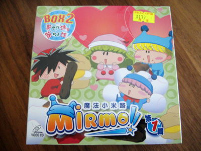
Video CD BOXのパッケージです。
日本版とは違ったアニメ版パッケージは
また別の魅力がありますね。
2011年6月の時点で、香港ドルは1$=10.3円なので、
179$は1844円になります。
安い！
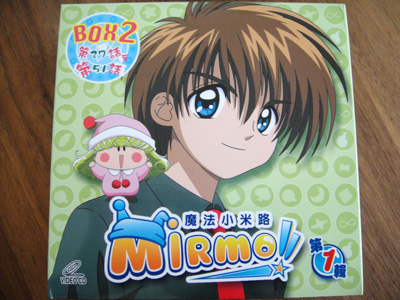
箱の反対側です。
結木くんが凛々し過ぎですね。
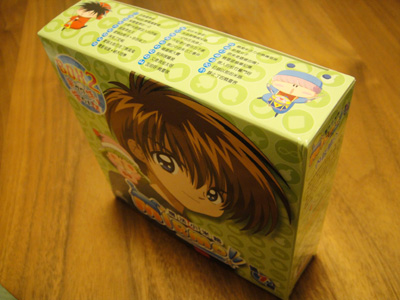
角度を変えて。
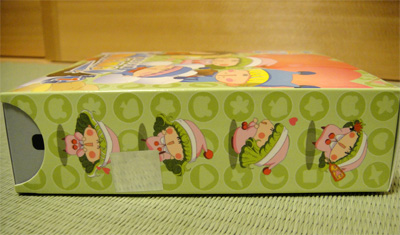
側面もかわいくてポイント高いです。
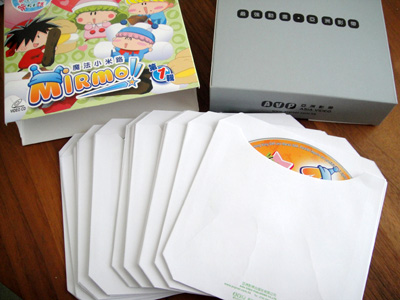
内箱の中にCDが13枚入っています。
特にリーフレットは無しです。
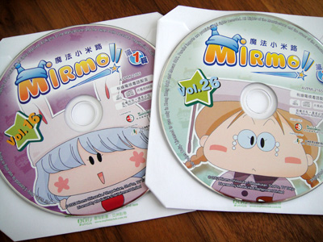
CD1枚1枚がピクチャーレーベルになっています。
妖精ファンにはたまらないですね(^^)。
それでは再生してみます。
ちなみにVideo CDとは、普通の音楽CDの容量に動画を記録する規格で、当然のごとく画質はDVDより悪いです。DVDが主流の今、対応機器が減ってきていますが、PCで何とか再生できました。
まずはお決まりのロゴから。
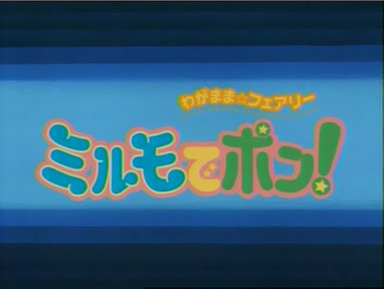
おや？ 映像は日本と全く一緒です(^^;。
BOXにあるあのロゴはいったいどこへ・・・？
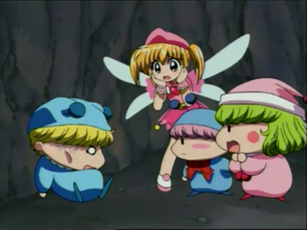
もちろん本編も日本と一緒。
効果音やサントラは日本と一緒で、キャラのセリフのみ
現地の声優さんの声に置き換えられていました。
ムルモの声がミルモより低いのにはびっくり！
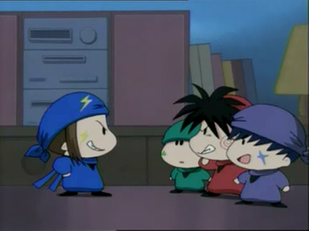
ちょっと聞こえにくいですが
「フフフのフー」もバッチリ入っていました！
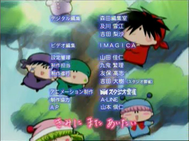
EDも日本版と一緒。
中国語の字幕は一切なく、声優さんの紹介も無しです。
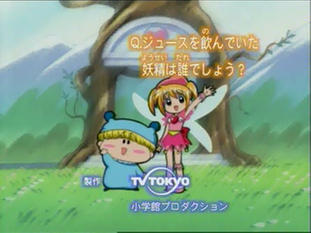
ラストのクイズは声優さんが読み上げていました。
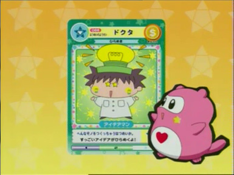
妖精占いカードも日本版です。
海外版の雰囲気は伝わりましたでしょうか？
ミルモでポン！が日本だけでなく、世界からも愛されていると思うと、ファンとしてはうれしいですね。
(2011/6/13)